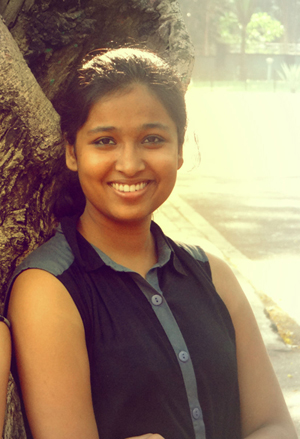

The journey of life came on October 13th,1995.that was the day my parents blessed me with the name Sonia.the path my life has taken so far has been a steady one with very few times that I had gone off course.I look at my life as a gift and try my hardest not to take it for granted.The years i have spent on this earth have been more than amazing and I imagine they are more than i could have ever asked for.
I spent majority of my time with the ones I love most, like my family and closest friend they are the ones that give my head on strate and help me suceed at the goals I set for my self,if it were not for the people who love me the most and the fortunate home I have grown up in I don't know where in the world I would be today .
As I said before,I spend most of my hours with my family and closest friend. My friend are my backbone and my family is my strength and wisdom.There are three friends in my life that I spent every warking moment with.These three girls are Bunny, Chahak, Pratima.They are my best friend and they are the ones that help me in hard time and hold me up when i need the extra support.That is why I consider them my,"BACKBONE".My mom has been agreat support to me .Today what I am is only because of my mom she always supported me and inspired me me and motivated me and struggled more than me for my education she taught me how to deal with troubling situations more efficiently and I can't imagine my self without her.
It's obvious that my family and friend mean more than anything to me but there are other things in my life that i have a deep passion for.these things include dance and my ambiton to suceed in life.I love deerly.....dancing whenever I feel stressed I dance and feel so much relaxed.Outside of my friendship and dance though there is still my biggest goal in life. That goal is to be a successful,independent woman when I move beyond my own home.I aspire to attend IIT after intermediate and have a B.tech degree to become an Engeener. One day I will have my own practice and with the money I earn I will help those of the third world.
That's my life in a nut-shell but if you want to know more about the real me continue on throughout this website!